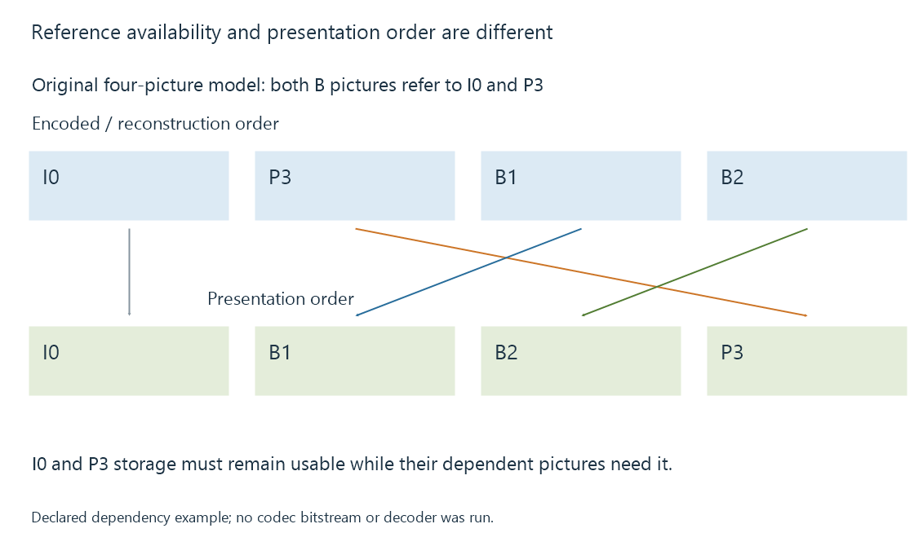

Hardware decoding and software decoding
Hardware and software video decoding reconstruct encoded pictures through different execution paths while preserving the stream’s configuration, reference and presentation requirements.
A video decoder reconstructs pictures from the selected encoded stream. A software decoder performs that implementation's work through CPU execution; a hardware decoder submits suitable work to an exposed hardware decoding path.
Both need the stream's actual configuration and picture dependencies. The container must first be parsed so the decoder receives the appropriate encoded data.
Match the encoded configuration
Codec family is one property of the query. Hardware support can also depend on profile, chroma format, bit depth, dimensions and relevant coding features.
Use an original teaching decoder that accepts HEVC Main/Main 10, 4:2:0, within its declared dimension range:
| Selected stream | Result under the invented declaration |
|---|---|
| HEVC Main 10, 4:2:0, 1920 × 1080 | Within the stated configuration |
| HEVC 4:2:2, same dimensions | Chroma configuration does not match |
| HEVC Main 10 beyond its maximum dimensions | Dimension limit does not match |
| Another codec family | A separate support query is needed |
The table is not a real device matrix. It explains why one HEVC source can enter a hardware path while another needs a different decoder.
An Emby session's actual source properties and active decoder identify which case was exercised. An enabled setting describes permission or preference; the selected runtime path describes execution.
References determine reconstruction order
Compressed video can use pictures that refer to other pictures. A decoder needs those references before reconstructing the dependent pictures.
An original four-picture model uses an encoded/decode order of I0, P3, B1, B2 and a presentation order of I0, B1, B2, P3. In this model the two B pictures use I0 and P3 as references.

The hardware/driver or application manages the required decoded-picture storage according to the chosen interface. A reference picture cannot be overwritten while later decoding still needs it.
Some APIs expose pictures in presentation order; others expose lower-level completion and ordering responsibilities. V4L2 stateless decoding, for example, gives the application an explicit role in reference state.
Reconstruction and later processing are separate
Choosing a decoder does not re-encode the source. For supported conforming input, decoding implements its reconstruction rules.
Visible differences can arise elsewhere: output bit depth or range conversion, deinterlacing, scaling, colour processing or display handling. A comparison should keep those later operations consistent before attributing a difference to the decode implementation.
Likewise, a decoder's output format matters to the next stage. A hardware frame may remain in device-associated storage, while a software decoder usually gives the application a CPU-oriented picture layout.
Fallback changes a route, not the movie’s identity
An application can choose a software path when its usable hardware path cannot decode the selected configuration. That can change CPU demand and subsequent memory handling while preserving the source and intended programme timeline.
A CPU filter after hardware decoding needs the appropriate access or transfer. Conversely, software-decoded pictures can be prepared for a hardware encoder. The full decode-filter-encode route determines those costs.
See Also
- Fixed-function media engines
- The hardware decode-filter-encode pipeline
- NVIDIA NVDEC
- Video Acceleration API (VA-API)
- Decoding media streams
- Video Keyframes and Random Access